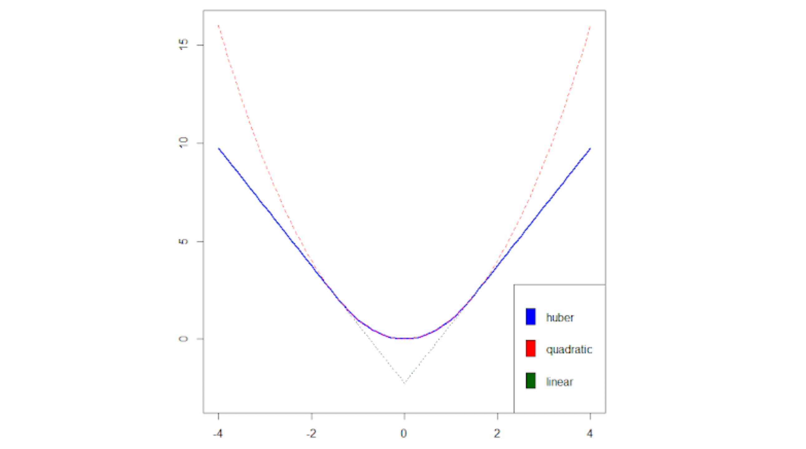

1. Introduction
최적화 문제에서 목적 함수가 매끄럽지 않은(Non-smooth) 경우, 일반적인 경사하강법(Gradient Descent)을 직접 적용하기 어렵습니다. 이러한 문제를 해결하기 위한 대표적인 수학적 기법이 바로 Moreau-Yosida Smoothing (Moreau Envelope)입니다. 이 기법은 미분 불가능한 함수를 미분 가능한 형태로 근사하면서도 원래 함수의 최적해를 보존하는 놀라운 특성을 가집니다.
또한, 제약 조건이 있는 최적화 문제(Constrained Optimization)를 풀기 위해서는 문제를 다루기 쉬운 형태로 변환하는 도구가 필요합니다. 이를 위해 라그랑주 쌍대성(Lagrangian Duality)과 최적해의 필요충분조건인 KKT 조건(Karush-Kuhn-Tucker Conditions)을 도입합니다.
이 포스트에서는 매끄럽지 않은 볼록 최적화 문제를 해결하기 위한 Moreau-Yosida 평활화의 수학적 원리와 증명 과정을 상세히 분석하고, 제약 조건이 있는 문제에서 쌍대성과 KKT 조건이 어떻게 유도되는지 논리적으로 재구성해보겠습니다.
2. Moreau-Yosida Smoothing
2.1. 평활화의 정의 (Definition)
- 주어진 함수 \(f:\mathbb{R}^{d}\rightarrow\mathbb{R}\) 에 대하여, 매개변수 \(\eta>0\) 에 대한 Moreau-Yosida Smoothing (혹은 Moreau Envelope)은 다음과 같이 정의됩니다:
\[f_{\eta}(x):=\inf_{u}\left\{f(u)+\frac{1}{2\eta}||u-x||_{2}^{2}\right\}\]
- 근접 연산자(Proximal Operator)를 이용하면 위 식은 다음과 같이 다시 쓸 수 있습니다:
\[f_{\eta}(x)=f(\text{prox}_{\eta f}(x))+\frac{1}{2\eta}||\text{prox}_{\eta f}(x)-x||_{2}^{2}\]
- 직관적 의미 (Motivation):
- 이 정의를 살펴보면, 원래의 함수 값 \(f(u)\)를 최소화하려 하면서 동시에 평가 포인트 \(u\)가 \(x\)에서 너무 멀어지지 않도록 \(\frac{1}{2\eta}||u-x||_{2}^{2}\) 라는 이차 페널티(Quadratic penalty)를 부여하고 있습니다. \(\eta\)가 작을수록 원래 함수의 형태를 강하게 따르게 되며, 페널티 항 덕분에 뾰족한(Non-smooth) 형태를 가진 함수라도 부드러운(Smooth) 형태를 갖게 됩니다.
2.2. Moreau Envelope의 주요 수학적 성질
- 볼록 함수에 대해 Moreau Envelope은 다음과 같은 매우 훌륭한 성질들을 가집니다.
2.2.1. 볼록성 (Convexity)
Proposition 15.1: 함수 \(f:\mathbb{R}^{d}\rightarrow\mathbb{R}\) 가 볼록(Convex)하면, 그 평활화 함수인 \(f_{\eta}\) 도 볼록 함수입니다.
증명:
- 새로운 함수 \(g(x,u) = f(u) + \frac{1}{2\eta}||u-x||_{2}^{2}\) 를 정의해 봅시다. \(f(u)\) 가 볼록하고, 이차항 \(\frac{1}{2\eta}||u-x||_{2}^{2}\) 역시 \((x, u)\) 에 대해 볼록하므로 \(g(x,u)\) 는 결합적으로 볼록(Jointly convex)합니다.
- \(f_{\eta}(x)\) 는 \(g(x,u)\) 에서 변수 \(u\) 에 대해 부분 최소화(Partial minimization)를 수행한 결과입니다. 볼록 함수의 부분 최소화 역시 볼록성을 유지하므로, \(f_{\eta}\) 는 볼록합니다.
2.2.2. 펜첼 켤레 (Fenchel Conjugate)
Proposition 15.2: \(f_{\eta}\) 의 펜첼 켤레 함수 \(f_{\eta}^{*}\) 는 다음과 같이 주어집니다:
\[f_{\eta}^{*}(y)=f^{*}(y)+\frac{\eta}{2}||y||_{2}^{2}\]
증명:
- \(f_{\eta}\) 의 정의는 \(u + v = x\) 로 두었을 때, \(f(u)\) 와 \(\frac{1}{2\eta}||v||_{2}^{2}\) 의 하한 합성(Infimal Convolution) 형태입니다: \[f_{\eta}(x)=\inf_{u+v=x}\left\{f(u)+\frac{1}{2\eta}||v||_{2}^{2}\right\}\]
- 두 함수의 하한 합성의 켤레 함수는 각각의 켤레 함수를 더한 것과 같습니다. 즉, \[f_{\eta}^{*}(y)=f^{*}(y)+\left(\frac{1}{2\eta}||\cdot||_{2}^{2}\right)^{*}(y)\]
- 여기서 이차 함수의 켤레를 계산해 보면, 최적화 조건에 의해 \(\left(\frac{1}{2\eta}||\cdot||_{2}^{2}\right)^{*}(y) = \sup_{v}\left\{y^{\top}v-\frac{1}{2\eta}||v||_{2}^{2}\right\} = \frac{\eta}{2}||y||_{2}^{2}\) 가 도출됩니다. 이를 대입하면 증명이 완료됩니다.
2.2.3. 평활성 (Smoothness)
Proposition 15.3: 함수 \(f\) 가 볼록하면, 그 Moreau envelope \(f_{\eta}\) 는 \(l_{2}\) 노름 하에서 \((1/\eta)\)-smooth (미분 가능하며 그래디언트가 립시츠 연속) 합니다.
증명:
- \(f\)가 볼록하므로 \(f_{\eta}\)도 닫힌 볼록 함수(Closed convex function)입니다. 명제 15.2에 의해 켤레 함수 \(f_{\eta}^{*}\) 는 \(\eta\)-강볼록(Strongly convex)합니다 (이차항 \(\frac{\eta}{2}||y||_{2}^{2}\) 때문).
- 켤레 함수가 강볼록하면 원래 함수(여기서는 이중 켤레 \(f_{\eta}^{**} = f_{\eta}\))는 \((1/\eta)\)-smooth 하다는 쌍대성 성질에 의해 증명됩니다.
2.2.4. 그래디언트와 근접 연산자 (Gradient)
Proposition 15.4: 볼록 함수 \(f\) 에 대하여, Moreau envelope의 그래디언트는 다음과 같습니다:
\[\nabla f_{\eta}(x)=\text{prox}_{f^{*}/\eta}\left(\frac{x}{\eta}\right)=\frac{1}{\eta}(x-\text{prox}_{\eta f}(x))\]
증명:
- \(y = \nabla f_{\eta}(x)\) 는 \(x \in \partial f_{\eta}^{*}(y)\) 와 동치입니다. 앞선 명제에서 \(\partial f_{\eta}^{*}(y) = \partial f^{*}(y) + \eta y\) 이므로,
- \(x \in \partial f^{*}(y) + \eta y \iff x - \eta y \in \partial f^{*}(y) \iff \frac{1}{\eta}x - y \in \frac{1}{\eta}\partial f^{*}(y)\)
- 이는 \(y = \text{prox}_{f^{*}/\eta}\left(\frac{x}{\eta}\right)\) 를 의미합니다.
- 여기에 Moreau Decomposition Theorem (\(x = \text{prox}_{\eta f}(x) + \eta \text{prox}_{f^{*}/\eta}(x/\eta)\)) 을 적용하여 \(y\) 에 대해 정리하면 \(\frac{1}{\eta}(x-\text{prox}_{\eta f}(x))\) 가 도출됩니다.
2.3. 예시: \(L_1\) 노름과 Huber Loss
- Lasso 회귀 등에서 자주 쓰이는 절대값 함수(L1 노름)에 평활화를 적용해보겠습니다.
- 함수 \(f(x)=||x||_{1}\) 에 대한 Moreau envelope은 각 차원별로 분리되어 다음과 같이 주어집니다.
\[f_{\eta}(x)=\sum_{i=1}^{d}\frac{1}{\eta}L_{\eta}(x_{i})\]
- 이때 \(L_{\eta}\) 는 로버스트 통계학에서 널리 쓰이는 Huber Loss 함수입니다:
\[L_{\eta}(c)=\begin{cases}\eta|c|-\eta^{2}/2, & \text{if } |c|\ge\eta \\ |c|^{2}/2, & \text{if } |c|\le\eta\end{cases}\]

2.4. 평활화된 목적 함수의 최적화와 Proximal Point Algorithm
Proposition 15.5: 닫힌 함수 \(f\) 에 대해, Moreau-Yosida smoothing \(f_{\eta}\) 의 최소화해(Minimizer)는 원래 함수 \(f\) 의 최소화해와 동일합니다.
증명:
- 최적화 1차 필요조건에 의해 \(\nabla f_{\eta}(x^{*}) = 0\) 이어야 합니다. 명제 15.4를 대입하면 \(\frac{1}{\eta}(x^{*} - \text{prox}_{\eta f}(x^{*})) = 0\), 즉 \(x^{*} = \text{prox}_{\eta f}(x^{*})\) 입니다.
- 근접 연산자의 정의에 의해 이는 \(0 \in \partial f(x^{*})\) 와 동치이며, 따라서 \(x^{*}\) 는 \(f\) 의 최소화해입니다.
중요한 통찰:
- 원래 문제 \(\text{minimize } f(x)\) 를 푸는 것은 \(\text{minimize } f_{\eta}(x)\) 를 푸는 것과 동치입니다. \(f_{\eta}\) 는 볼록하고 \((1/\eta)\)-smooth 하므로 스텝 사이즈 \(\eta\) 로 경사하강법(Gradient Descent)을 적용할 수 있습니다.
\[x_{t+1}=x_{t}-\eta\nabla f_{\eta}(x_{t}) = x_{t}-\eta\left(\frac{1}{\eta}(x_{t}-\text{prox}_{\eta f}(x_{t}))\right) = \text{prox}_{\eta f}(x_{t})\]
- 놀랍게도 위 식은 Proximal Point Algorithm의 업데이트 규칙과 정확히 일치합니다. 즉, Proximal 방법론은 본질적으로 원래 함수를 평활화한 뒤 경사하강법을 수행하는 것과 동일한 과정입니다.